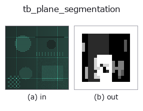

typed op• 데이터 종류: points → volume
• 호출: fullseye.apply(img, "tb_plane_segmentation", a=0.5, b=0.5)(2-D 는 이미지 1 장 + 스칼라 노브 2 개 a,b∈[0,1] 모델)

*그림은 128×128 합성 입력에서 실제로 실행한 출력. 왼쪽이 입력, 오른쪽이 출력. 점군은 위에서 본 산점도(밝기 = z), 1-D 열은 꺾은선, 볼륨은 z 방향 최대값 투영, 동영상은 가운데 프레임, 복소 영상은 진폭이며, 그림이 되지 않는 반환값은 값 자체를 표시한다.*
노브 a 를 훑기(0.1 / 0.5 / 0.9, 다른 노브는 기본값):
▸ tb_plane_segmentation: 노브 a 스윕 (문서 사이트)
노브 b 를 훑기(0.1 / 0.5 / 0.9, 다른 노브는 기본값):
▸ tb_plane_segmentation: 노브 b 스윕 (문서 사이트)
단계(앞에 오는 op → 이 op, 왼쪽에서 오른쪽으로):
▸ tb_plane_segmentation: 단계 (문서 사이트)
다른 영상에서도(합성 장면 / 사진 / 동전. 윗줄이 입력, 아랫줄이 그 출력. 노브는 기본값):
▸ tb_plane_segmentation: 다른 입력 이미지 (문서 사이트)
움직임(GIF: 프레임 / 시점 / 슬라이스를 차례로. 정지 그림이 완성형이고 GIF는 보조):
반복 RANSAC으로 최대 max_planes개의 평면을 순차적으로 추출한다(잔여 점은 -1).
남은 점 집합에 ransac_fit.ransac_plane을 걸어, 그 최대 consensus 평면의 inlier 수가 min_inliers 이상이면 새 라벨을 주고 제거 → 나머지로 다시 검출, 을 반복한다. 여러 바닥/벽/계단 모양의 면을 한 번에 분리한다(단일 평면 적합인 pcseg와의 차이). inlier가 min_inliers에 못 미치게 된 시점에 멈추고, 이후의 점은 잔차 -1(구나 복잡한 물체는 여기에 남는다).
Args:
points: (N,3) 점군.
thresh: 점-평면 거리의 inlier 임계값(거리, > 0 필요).
min_inliers: 평면으로 채택할 최소 inlier 수(>= 3 필요).
max_planes: 추출할 평면의 최대 장수(>= 1 필요).
iters: 각 RANSAC 반복 수.
seed: 난수 시드(결정론. 각 평면에서 seed+평면index를 쓴다).
Returns:
labels: (N,) int. 검출 순서(=consensus 큰 순서에 가깝다)로 0,1,2,...를 평면에 부여,
어느 평면에도 속하지 않는 잔차점은 -1. 빈 입력은 shape (0,).
2-D 진화 레지스트리로 연결한 3d의 op plane_segmentation. 구현은 같고, 호출 규약만 op(v, a, b)에 맞췄다. a는 max_planes(기본값 5), b는 iters(기본값 300)를 바꾼다.
• 샘플 데이터 카탈로그(DL URL / 라이선스) —— 2-D 는 skimage.data(BSD/public)+ 합성, 3-D 는 실데이터 소스(Stanford/PDS 등)의 DL URL.
• 연산자의 내력·참고문헌 —— 이 연산자 족의 바탕이 된 연구/기법의 출처.
아래 프로그램은 실제로 실행됨을 확인했습니다(그림과 같은 입력). Studio 도움말에서는 이 블록이 버튼이 되어 즉시 불러와 실행할 수 있습니다.
img_to_points 0.50 0.50 tb_plane_segmentation 0.50 0.50
아래 예제는 원래의 대장 op plane_segmentation를 호출한다. 이 브리지 op는 같은 구현을 fn(v, a, b) 규약에 맞춘 것뿐이므로 동작은 그대로 적용된다(호출 형식만 다름).
• object_segmentation — py -3.11 examples_3d/object_segmentation.py
volume 를 입력으로 받는 것)identity · vol_gaussian · vol_median · vol_erode · vol_dilate · vol_threshold · vol_reg_dilate · vol_reg_erode
typed)tb_points_to_voxel · tb_estimate_point_normals · tb_iss_keypoints · tb_project_points · tb_render_point_depth · tb_statistical_outlier_removal · tb_radius_outlier_removal · tb_voxel_grid_downsample
*Provenance: ops.py — 2D 연산자 레지스트리. 이 op 노트는 tools/opdocs.py md 가 자동 생성합니다(직접 편집하지 마세요).*
© 2026 Kazufumi Furuse — Fullseye operator documentation. Licensed under Apache-2.0.